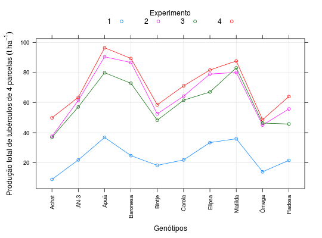

Grupo de ensaios de competição de genótipos de batata realizado por Filgueira (1991) em Anápolis - GO. Cada experimento foi instalado em delineamento de blocos casualizados com 4 repetições. A variável resposta foi a produção, em t ha\(^{-1}\), de batata.
Um data.frame com 40 observações e 3 variáveis, em que
expergenotprodEsse data.frame não possuí o valor individual de cada parcelas
mas sim a soma do valor (total) nas parcelas de um mesmo genótipo
em cada um dos experimentos. As estimativas dos quadrados médios
residuais em cada experimento estão disponíveis no atributo
"qmr" do objeto.
BANZATTO; KRONKA (2013), Quadro 8.3.1, pág. 196.
Filgueira, F. A. R. (1991). Interação genótipo ambiente em batata (Solanum tuberosum L. spp tuberosum). Tese (Doutorado em Produção Vegetal). Faculdade de Ciências Agrárias e Veterinárias, Universidade Estadual Paulista, Jaboticabal: SP.
library(lattice) data(BanzattoQd8.3.1)#> Warning: data set ‘BanzattoQd8.3.1’ not foundstr(BanzattoQd8.3.1)#> 'data.frame': 40 obs. of 3 variables: #> $ exper: Factor w/ 4 levels "1","2","3","4": 1 1 1 1 1 1 1 1 1 1 ... #> $ genot: Factor w/ 10 levels "Achat","AN-3",..: 1 2 3 4 5 6 7 8 9 10 ... #> $ prod : num 8.94 21.88 36.82 24.72 18.26 ... #> - attr(*, "qmr")= Named num 1.22 3.01 3.78 5.54 #> ..- attr(*, "names")= chr "1" "2" "3" "4"attr(x = BanzattoQd8.3.1, which = "qmr")#> 1 2 3 4 #> 1.2187 3.0052 3.7777 5.5430with(BanzattoQd8.3.1, addmargins(tapply(prod, list(genot, exper), FUN = mean)))#> 1 2 3 4 Sum #> Achat 8.94 37.57 36.95 49.87 133.33 #> AN-3 21.88 61.48 57.11 63.54 204.01 #> Apuã 36.82 90.44 79.87 96.44 303.57 #> Baronesa 24.72 86.63 72.84 89.35 273.54 #> Bintje 18.26 52.54 48.26 58.53 177.59 #> Carola 21.87 64.28 61.60 71.10 218.85 #> Elipsa 33.40 78.98 67.04 81.69 261.11 #> Matilda 35.95 80.04 83.10 87.65 286.74 #> Ômega 14.00 45.06 46.38 48.66 154.10 #> Radosa 21.59 55.75 45.79 64.02 187.15 #> Sum 237.43 652.77 598.94 710.85 2199.99xyplot(prod ~ genot, groups = exper, data = BanzattoQd8.3.1, type = c("p", "a", "g"), auto.key = list(title = "Experimento", cex.title = 1, columns = 4), scales = list(x = list(rot = 90)), xlab = "Genótipos", ylab = expression( "Produção total de tubérculos de 4 parcelas"~(t~ha^{-1})))